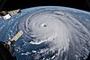

tropical-cyclone

Definition: A tropical cyclone is a rapidly rotating storm system characterized by a low-pressure center, a closed low-level atmospheric circulation, strong winds, and a spiral arrangement of thunderstorms that produce heavy rain and squalls. Depending on its location and strength, a tropical cyclone is referred to by different names, including hurricane (), typhoon (), tropical storm, cyclonic storm, tropical depression, or simply cyclone. A hurricane is a strong tropical cyclone that occurs in the Atlantic Ocean or northeastern Pacific Ocean, and a typhoon occurs in the northwestern Pacific Ocean. In the Indian Ocean, South Pacific, or (rarely) South Atlantic, comparable storms are referred to as "tropical cyclones", and such storms in the Indian Ocean can also be called "severe cyclonic storms".
Source: Wikipedia
Wikipedia Page (Something wrong with this association? Let us know.)
Wikidata Page (Something wrong with this association? Let us know.)